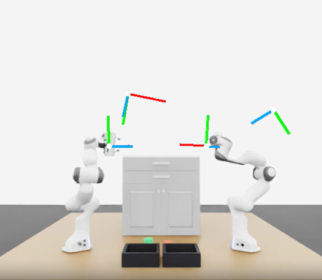
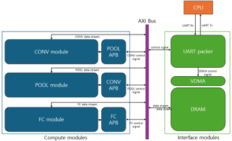

Seoul National University
B.S. in Mechanical Engineering, with a double major in Electrical & Computer Engineering
GPA: 4.04 / 4.30 · Includes 18 months of mandatory military service

SNU Undergraduate · UC San Diego Research Intern
I am an SNU undergraduate in Mechanical Engineering and Electrical & Computer Engineering, currently at UC San Diego as an exchange student and research intern with Prof. Nikolay Atanasov.
I study robot learning and multi-robot coordination for industrial automation: how robots can use shared environmental knowledge to select specialized skills, work in parallel, and cooperate on joint tasks.
Seoul National University
B.S. in Mechanical Engineering, with a double major in Electrical & Computer Engineering
GPA: 4.04 / 4.30 · Includes 18 months of mandatory military service
University of California San Diego
Exchange Student
Korea Science Academy of KAIST
High School Diploma
Research Intern, UC San Diego
Prof. Nikolay Atanasov’s group
Undergraduate Researcher, Seoul National University
Seoul National University · Advisor: Prof. Hyun Jong Yang
Undergraduate Researcher, Robotics Laboratory
Seoul National University · Advisor: Prof. Frank C. Park

I am developing a macro-action policy that uses shared 3D semantic memory and robot information to select each robot’s next specialized skill or a wait action.
Research question
Can one shared memory support both parallel task execution and cooperative bimanual manipulation?

I devised CATA, developed much of its mathematical formulation, and implemented simulations in NVIDIA Sionna. The method scores task assignments using motion cost and predicted pilot contamination to account for how robot motion affects wireless communication.
Higher throughput, shorter missions
4.815 → 4.941 Mbps uplink · 550.4 → 541.0 s completion time
Simulation means over 10 seeds, compared with closest-start allocation.
I formulated NGFM and implemented robosuite experiments, using local probabilistic PCA models of demonstrations to guide generative probability paths.
72.1% success with 80 demonstrations
Vanilla flow matching: 60.3% · Diffusion Policy: 56.9%
Simulated door opening, mean across 3 seeds. Gains of 11.9 and 15.2 percentage points, respectively.
Improvements varied across demonstration budgets; the broader hypothesis of a consistent advantage with scarce data was not supported.
Contamination-Aware Task Allocation for Cell-Free Cloud-Robotic AMR Warehouses
Revision work for IEEE Internet of Things Journal.

I implemented key components on an Artix-7 100T FPGA, mapping PE arithmetic to DSPs, configuring BRAM, and implementing AXI/APB interfaces; resolved integration and timing-closure issues.
32.9% lower end-to-end execution time
73.4 → 49.3 seconds
Reduced the USB latency setting from 16 ms to 1 ms after identifying a communication bottleneck.
Control and Robotics
Computation and Systems
{kind=link}